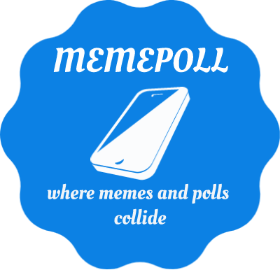

<!--
  Generated template for the PollBuilderPage page.

  See http://ionicframework.com/docs/components/#navigation for more info on
  Ionic pages and navigation.
-->
<ion-header>
  <ion-navbar>
    <ion-title>MemePoll</ion-title>
  </ion-navbar>
</ion-header>

<ion-content padding>
  <div class="memepoll-logo">
      
      <p>
        Click below to get started!
      </p>
  </div>
  
    <button ion-button block name="takePicture" (click)="takePicture()"><ion-icon name="camera"></ion-icon>Take Picture</button>
    <button ion-button block name="getImage" (click)="getImage()"><ion-icon name="folder-open"></ion-icon>Get Image</button>
    
</ion-content>
